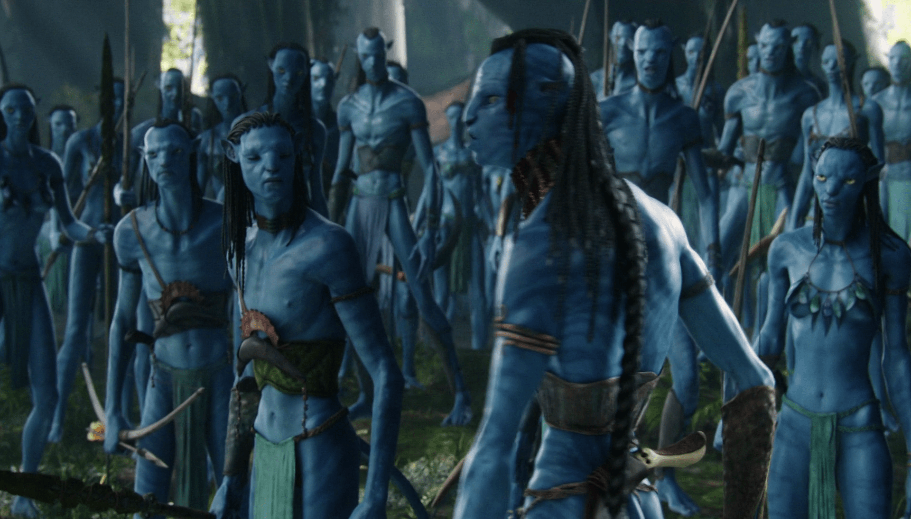

Főbb karakterek:

| Na’vik: | Érző földönkívüli humanoidok faj, akik a Pandora dzsungelében laknak. Átlagosan körülbelül 3 méter magasak, sima, csíkos ciánszínű bőrük van, nagy sárga szemekkel és hosszú farokkal. Testük karcsúbb, mint az emberé. Mély lelki kapcsolatban állnak a holdjuk más élőlényével és egymással. Nyelvük 400-500 szavas. |
| Jake Sully (Sam Worthington): |
Jake tengerészgyalogos volt, de megrokkant. Eredetileg a testvére vett részt a kísérletben, de ő elhunyt. Mivel azonos volt a génállományuk, ezért Jake lehetőséget kapott, hogy Pandorára menjen. Az ezredes megpróbál hatni katonai múltjára és próbálja rávenni, hogy férkőzzön a na’vik közelébe és adja át a tapasztalatait neki. Miután sok időt töltött a na’vik között, valami megváltozik benne, nem jelent többet az ezredesnek és átáll a na’vik oldalára. Amikor megtudja, hogy az emberek meg akarják támadni Pandorát, saját maga toboroz sereget és segédkezik az emberek elűzésében Pandoráról. |
| Neytiri (Zoë Saldana): |
Az Omaticaya klán Na'vi hercegnője. Találkozik Jake Sullyval az egyik pandorai erdőben, és segít neki, amikor megtámadja egy falka viperfarkas. Neytiri hamarosan Jake tanára lesz, és segít neki több feladatban. Végül egymásba szeretnek. Neytiri Jake mellett harcol a Lélekfa elleni támadásban, és megmenti őt attól, hogy Quaritch ezredes megölje. |
| Dr. Grace Augustine (Sigourney Weaver): |
A tudományos személyzet tagja az Avatar programban. Segített Jake Sully-nak a beilleszkedésben. Ő is jó kapcsolatban volt a na’vik-kal, amíg meg nem halt a támadásban. |
| Quaritch ezredes (Stephen Lang): |
Miles Quaritch ezredes a 2150-es évek elején a Pandora biztonsági főnökeként szolgált. A pandorai háború idején a csapat rangidős parancsnokaként szolgált. A kimutatott érc megszerzéséért az Omaticaya klán szülőházának megsemmisítését irányította, a Lelkek Fája elleni támadást vezette, ahol akció közben megölték. |
Stáblista:
| Rendezte: | James Cameron |
| Forgatókönyv: | James Cameron |
| Producer | James Cameron, Jon Landau |
| Vágó: | John Refoua, Stephen E. Rivkin, James Cameron |
| Zene: | James Horner, Simon Franglen |
| Látványtervező: | Rick Carter, Robert Stromberg, Kim Sinclair |